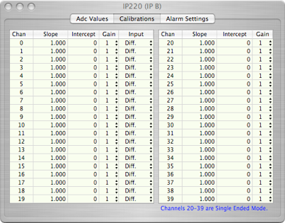
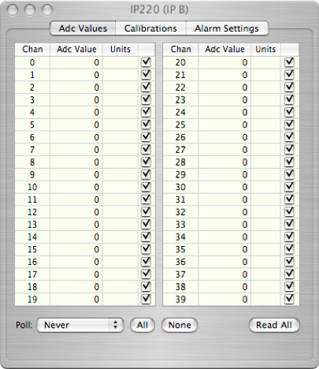
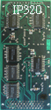
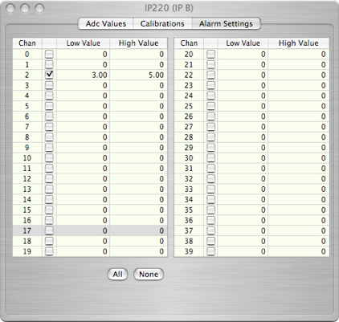

IP320 ADC



Set the polling frequency

The IP320 monitors 20 differential or 40 single-ended inputs. It has a 12-bit analog-to-digital converter. The IP320 object can only be placed onto an IP Carrier board. The Dialog has three tabbed pages, one for Adc values, one for Calibrations, and one for Alarm settings. See the manual for more information.
Displays the ADC value and units of any channels that are active enabled (checked)

Enable all or none of the channels
Force a read of enabled channels


Enable alarms and set low and high points for each channel.
ADC values out of range will post an alarm to the Alarm Master.
For each channel, set the slope, intercept, gain (1,2,4, or 8), and single-ended or differential mode (channels 0-19 only)
IP320 Data Format
The IP320 card can put out only one type of data records. Note that the card can only produce data if at least one channel is enabled. The format is:
xxxx xxxx xxxx xxxx xxxx xxxx xxxx xxxx
^^^^ ^^^^ ^^^^ ^^----------------------- IP320 ID (from header)
-----------------^^ ^^^^ ^^^^ ^^^^ ^^^^- length
xxxx xxxx xxxx xxxx xxxx xxxx xxxx xxxx
--------^-^^^--------------------------- Crate number
-------------^-^^^^--------------------- Card number
-----------------------------------^^^^--IP slot number
xxxx xxxx xxxx xxxx xxxx xxxx xxxx xxxx -Unix time (seconds from 1970)
xxxx xxxx xxxx xxxx xxxx xxxx xxxx xxxx
----------^^^^-^^^^----------------------Channel number
-------------------------^^^^-^^^^-^^^^--Adc Value
...
...
Up to 40 Adc Values can follow the Unix time. Use the record length to determine the actual total. Only enabled channels will ship an adc value.